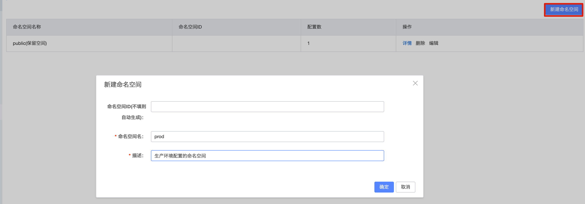
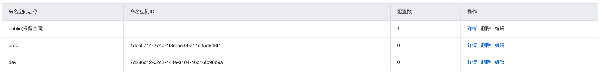
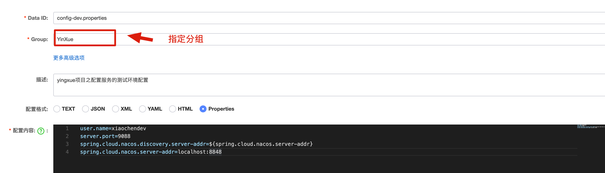
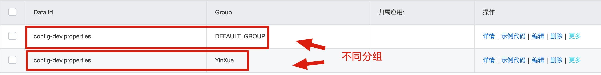
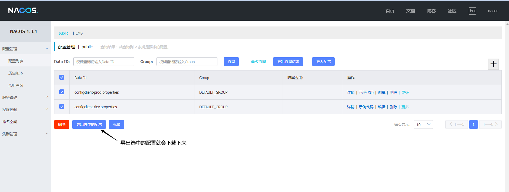

Nacos（3-配置中心使用）
读取配置文件顺序
SpringBoot 读取配置文件顺序：bootstrap.yml > bootstrap.properties > nacos 配置 > application.yml > application.properties
- 加载顺序：若 application.yaml 和 bootstrap.yaml 在同一目录下，bootstrap.yaml 先加载，application.yaml 后加载。bootstrap.yaml 用于应用程序上下文的引导阶段，application.yaml 由父 Spring ApplicationContext 加载
- 配置区别：bootstrap.yaml 和 application.yaml 都可以用来配置参数。bootstrap.yaml 用来程序引导时执行，应用于更加早期配置信息读取，可以理解为系统级别的一些参数配置，这些参数配置是不会变动的，一旦 bootstrap.yaml 被加载，则内容不会被覆盖
- 属性覆盖问题：启动上下文时，Spring Cloud 会创建一个 Bootstrap Context 作为 Spring 应用的 Application Context 的父上下文，初始化的时候，Bootstrap Context 负责从外部源加载配置属性并解析配置，这两个上下文共享一个从外部获取的 Environment。Bootstrap 属性有高优先级，默认情况下，它们不会被本地配置覆盖，即如果加载的 application.yaml 的内容标签与 bootstrap 的标签一致，application 也不会覆盖 bootstrap，而 application.yaml 里面的内容可以动态替换
环境隔离
- 命名空间（namespace）


- 组（group）


- 唯一标识（dataId）

动态感知
在进行修改 yaml 或 properties 文件，每次都要重新启动项目，可以在 nacos 配置中心进行文件配置，使得项目可以动态感知，在 resources 创建的文件名必须是 bootstrap。在 nacos 中创建配置文件，配置文件名称要和项目中 bootstrap.properties 中配置的名称一致，注意：配置文件的名称建议为项目服务名且要带上具体环境，例如：configclient-prod.properties
1 |
|
- application.yaml
1 | server: |
- bootstrap.yaml
1 | spring: |
1 |
|
1 |
|
本博客所有文章除特别声明外，均采用 CC BY-NC-SA 4.0 许可协议。转载请注明来源 爱编程的小生！
相关推荐

2025-03-10
MDC链路跟踪
MDC（Mapped Diagnostic Context）链路跟踪用于在分布式系统中维护请求的上下文信息。通过在日志中注入唯一请求ID，MDC可实现日志关联分析，便于问题排查。结合日志框架（如Logback、Log4j）和链路追踪系统（如Sleuth、Zipkin），可提升系统可观测性，优化故障排除效率。

2025-03-15
Nacos（1-环境搭建）
Nacos 是阿里巴巴开源的动态服务发现、配置管理与服务管理平台。环境配置包括 Nacos 的安装部署、数据库存储模式选择（嵌入式或 MySQL）、集群与多环境配置、权限控制及参数优化，确保服务高可用与配置中心高效稳定运行，适用于微服务架构。
2025-03-16
Nacos（2-注册中心使用）
Nacos 作为注册中心，支持服务的动态注册、发现与健康检查，适用于微服务架构。服务实例可通过 HTTP 或 Dubbo、gRPC 等方式注册至 Nacos，客户端可实时感知服务变更。支持负载均衡、权重调整及自定义元数据，实现高可用与弹性伸缩，提升服务治理能力。
评论